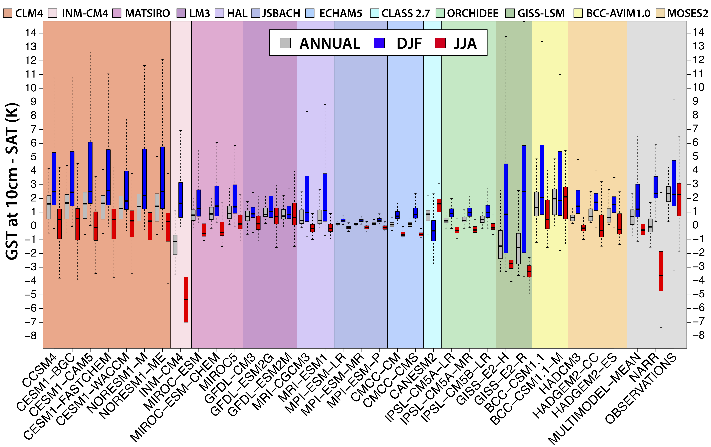
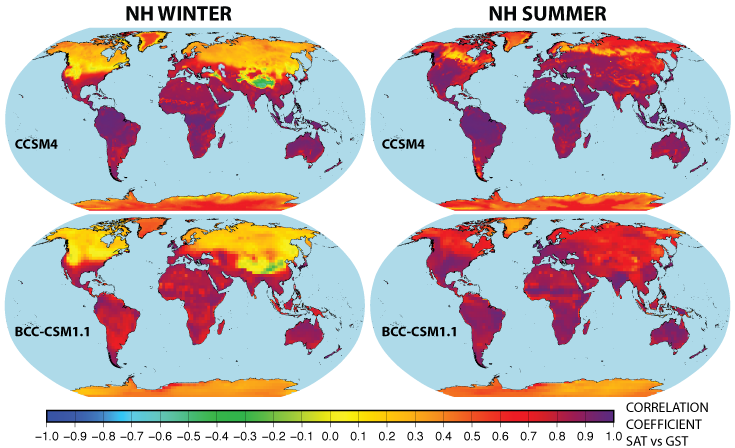

Almudena García-García
Homepage
Highlighted Research
Characterization of air and ground temperature relationships within the CMIP5 historical and future climate simulations.
 The relationships between air and ground surface temperatures across North America are examined in the historical and future projection simulations from 32 general circulation models (GCMs) included in the fifth phase of the Coupled Model Intercomparison Project (CMIP5). Our results show that the representation of air‐ground coupling, analyzed using the difference between ground and air surface temperatures as metric, differs from observations, the North American Regional Reanalysis product and among the CMIP5 GCM simulations, by amounts that depend on the employed land surface model. The large variability among GCMs and the marked dependence of the results on the choice of the land surface model illustrate the need for improving the representation of processes controlling the coupling of the lower atmosphere and the land surface in GCMs.
Simulation of air and ground temperatures in PMIP3/CMIP5 last millennium simulations: implications for climate reconstructions from borehole temperature profiles.
 We evaluate herein the thermal consequences of these processes as simulated by models in the third phase of the paleoclimate modelling intercomparison project and the fifth phase of the coupled model intercomparison project (PMIP3/CMIP5). We examine air and ground temperature tracking at decadal and centennial time-scales within PMIP3 last-millennium simulations concatenated to historical simulations from the CMIP5 archive. We find a strong coupling between air and ground temperatures during the summer from 850 to 2005 CE. Additionally, we use the simulated ground surface temperatures as an upper boundary condition to drive a one-dimensional conductive model in order to derive synthetic temperature-depth profiles for each PMIP3/CMIP5 simulation. These results demonstrate the robustness of surface temperature reconstructions from terrestrial borehole data and their interpretation as indicators of past surface air temperature trends and continental energy storage.